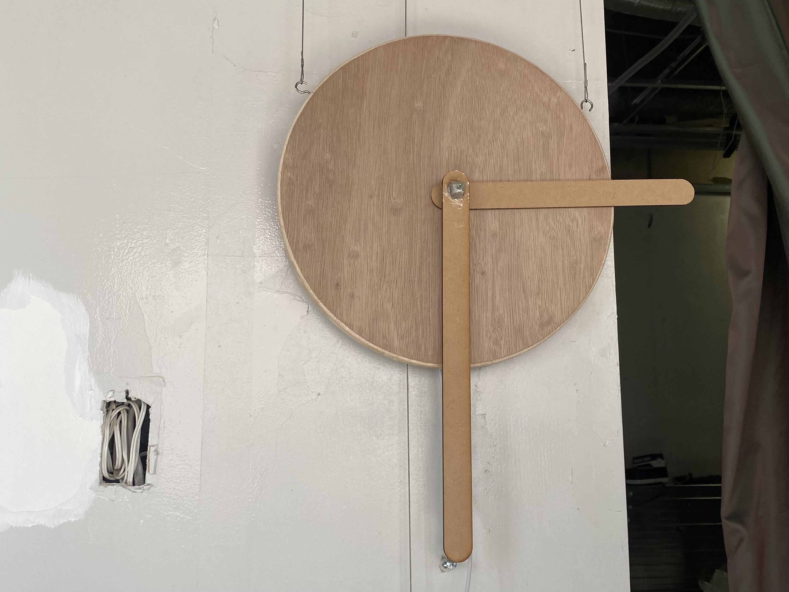
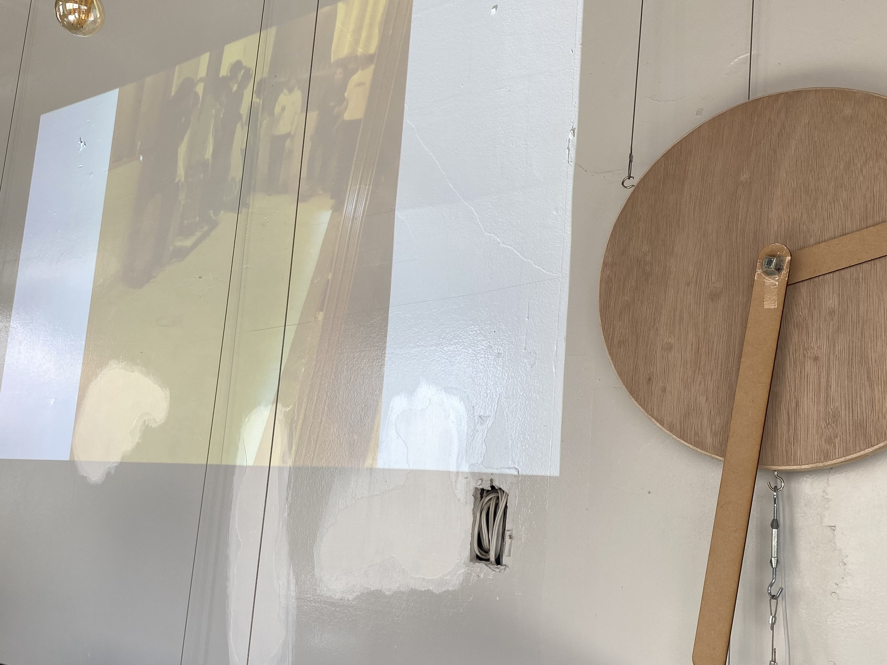

時計の針を回転させることで，展示会場の歴史をめぐることができる作品．


Processing,Arduino,加速度センサ
この作品は情報学部オープンラボワークショップ：建築分野とのコラボレーション・ハッカソン「モノの移り変わり」の際にグループで作成した作品です。 東京都江東区にあるFILTER Galleryで展示をしました。 FILTER Galleryでは、改修を通じて排出される廃材を再利用しながら、段階的にギャラリーを 作り上げる試みを実践しています。その廃材を使用して、情報技術と掛け合わせモノの移り変わりを感じることができる作品を制作しました。 私たちのチームは情報学部3年生2人と建築学部4年生1人のグループでした。情報学部だけでは思いつかないような発想などがあり、とても学びになりました。
時計の長針を回すと動画が切り替わります。反時計回りに回すにつれて過去の動画が再生されます。 FILTER Galleryではイベントなどが行われるので、その時の動画を流すことによってそこの場所の歴史がわかります。 時計に使われている丸い板は過去FILTER Galleryの床であった部分から出た廃材です。それによりモノだけでなく、FILTER Galleryの空間そのモノの移り変わりを感じることができます。
時計の長針に三軸加速度センサをつけて、現在どのくらい傾いているのかを取得します。 傾きの範囲を決めて、 それぞれの傾きの範囲によって、どの動画を再生するのかを決定します。